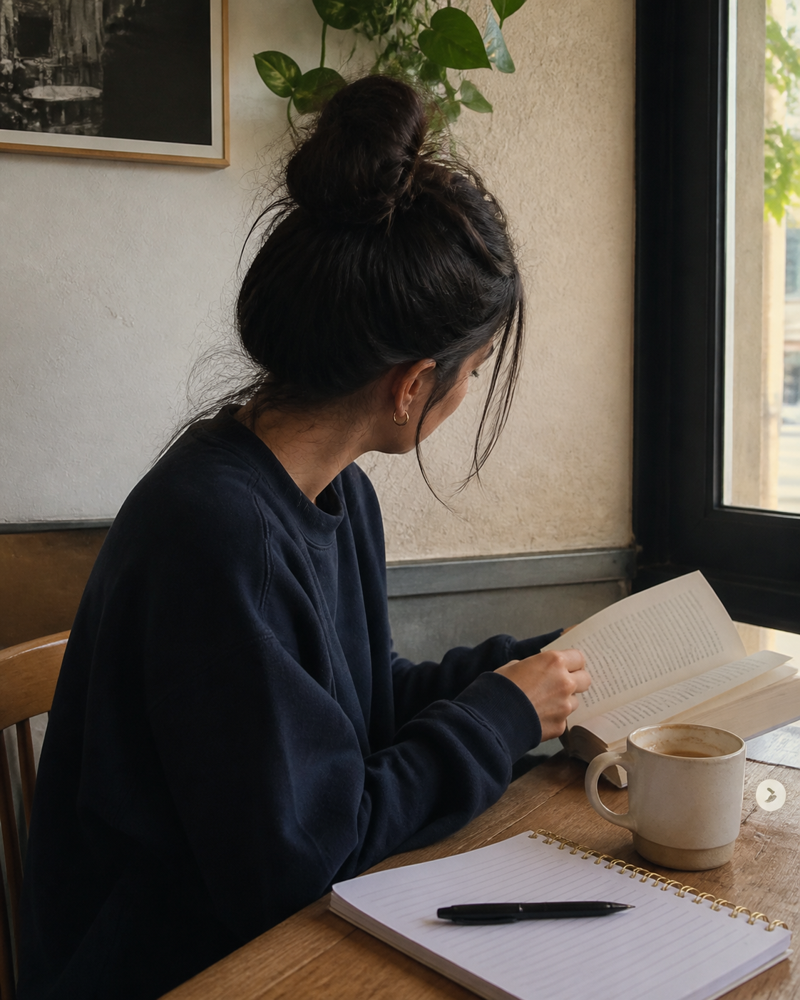

Weekend Notes · 01
the kind of morning i want to keep
coffee, a few pages, and nowhere urgent to be.
Five slides, one swipe sequence. Photo carries the frame, headline sits upper-third, footer tracks the swipe.

Little Rituals · 02
a warm cup, a slow start, ten quiet minutes for myself.